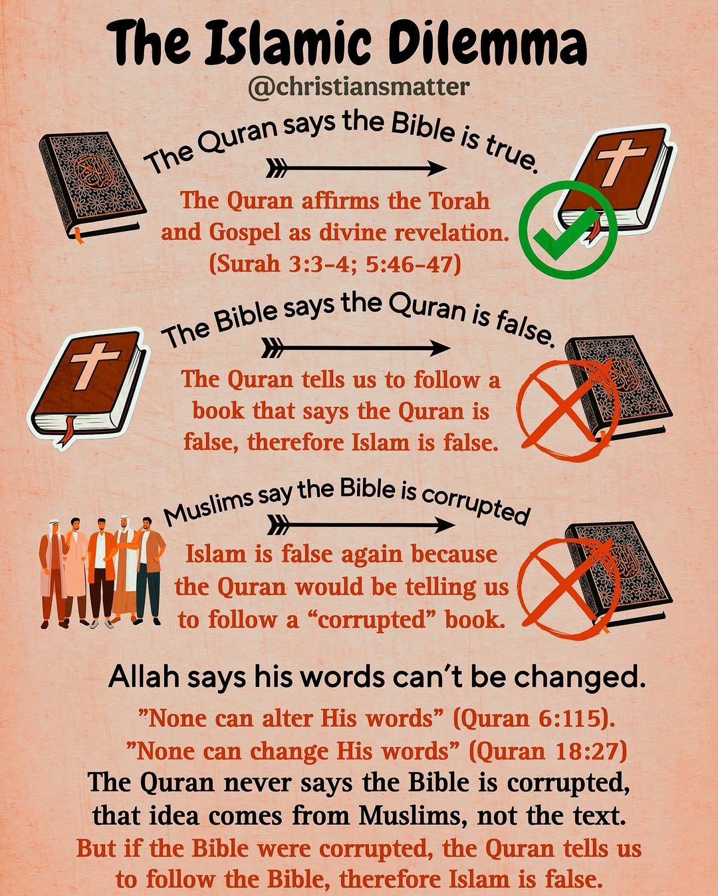
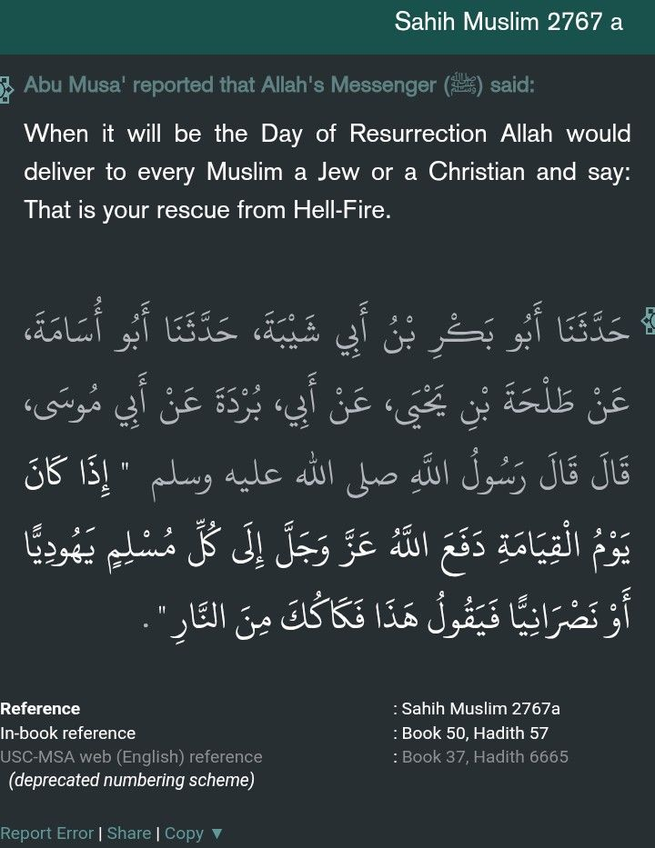
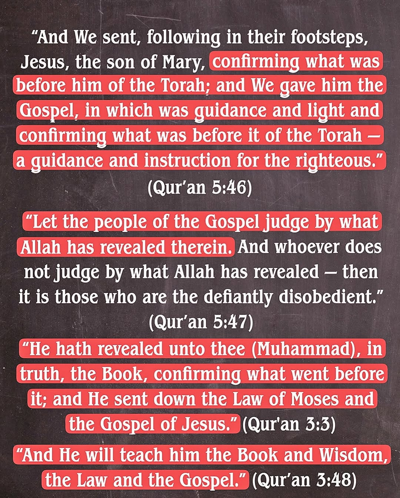
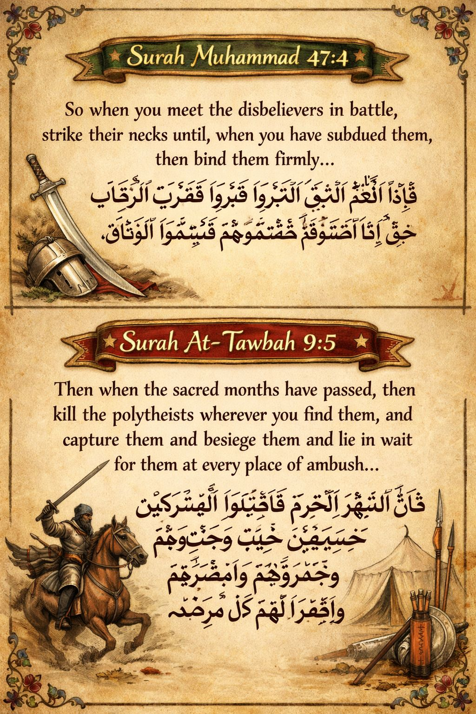
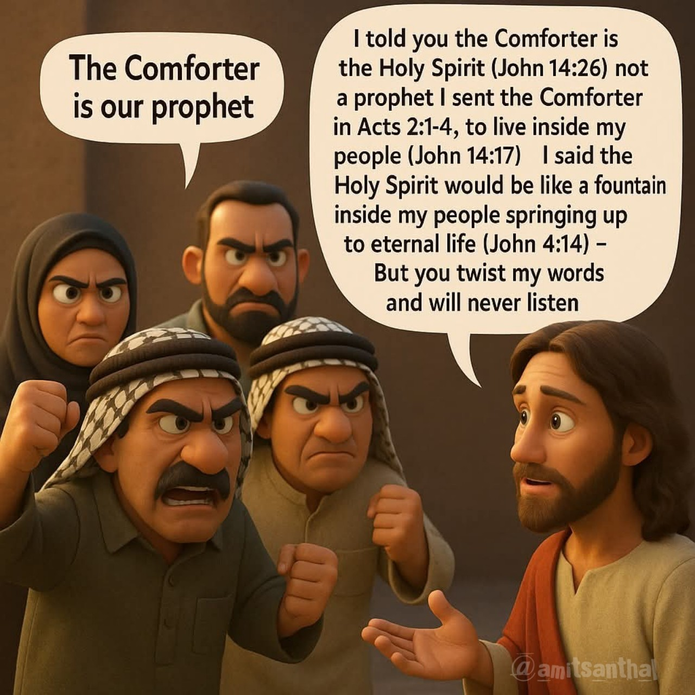
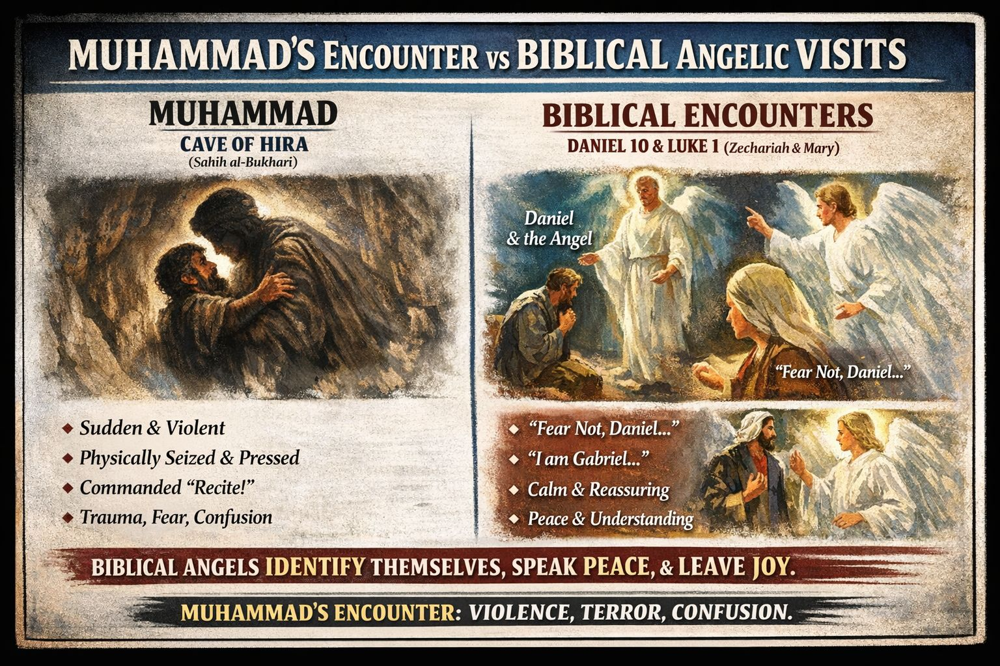

From the Archive
Featured work.







No fluff. No slogans. No blind faith. We go straight to primary sources, history, and Scripture — and we let the evidence speak. If a worldview collapses under scrutiny, it deserves to fall. If Jesus is Lord, He will stand.
Every assertion is tested. Every belief is held accountable.
In obedience to 2 Corinthians 10:5 (NASB):
We are destroying speculations and every lofty thing raised up against the knowledge of God, and we are taking every thought captive to the obedience of Christ. — 2 Corinthians 10:5
In the spirit of 1 Kings 18:21, we reject fence-sitting. Truth demands a decision.
We do this because of Christ’s love:
The Son of God… loved me and gave Himself up for me. — Galatians 2:20
And we are unapologetic about evidence:
If Christ has not been raised, our preaching is useless and so is your faith. — 1 Corinthians 15:14
No fluff. No slogans. No blind faith.
We go straight to primary sources, history, and Scripture — and we let the evidence speak. If we make a claim and you think it’s wrong, prove it. No complaints. No deflections. Bring your evidence.
If a worldview collapses under scrutiny, it deserves to fall.
If Jesus is Lord, He will stand.
Each line of inquiry is documented, sourced, and open to challenge. The evidence travels with you.
Side-by-side documentation of Ḥafṣ vs. Warsh and other transmission-line differences. Manuscript folios, not soundbites.
View variantsTacitus, Josephus, Pliny, the Talmud, and more. What hostile and indifferent writers in the first two centuries say about the Nazarene.
Open the dossierA side-by-side gospel tract: who Jesus is, what salvation is, and how the two books answer the question that decides eternity.
Read the tract





Deeper essays, primary-source dossiers, and ongoing case files — straight to your inbox. No noise. No clickbait. Evidence.
New essays land most weeks. Subscribe and read at your own pace.
Subscribe on SubstackFree. Unsubscribe anytime.
Speaking, debate, or written response — we welcome scrutiny. No complaints. No deflections. If we’re wrong, prove it. If we’re right, follow the evidence.